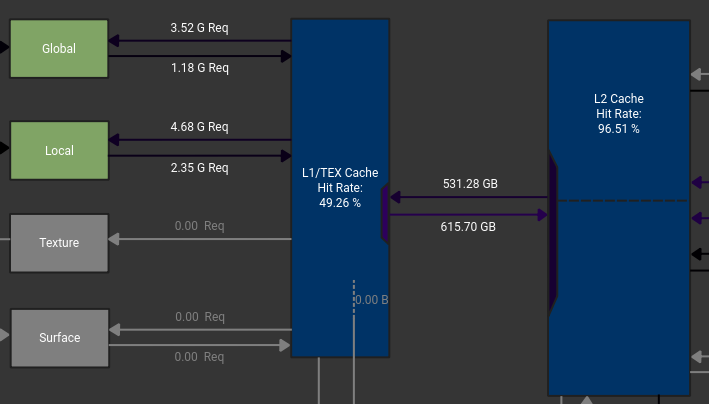
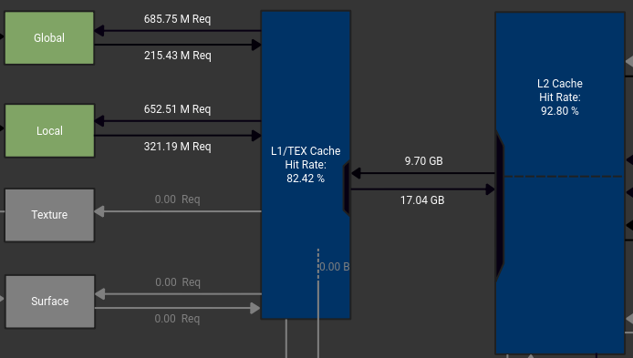
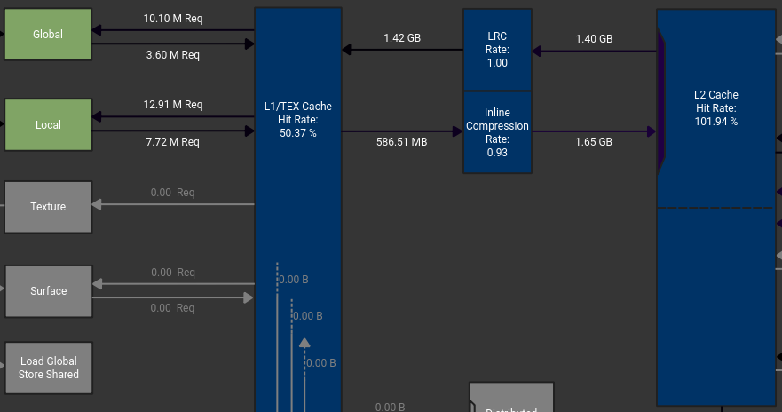
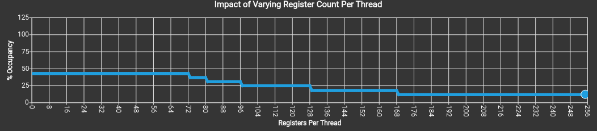
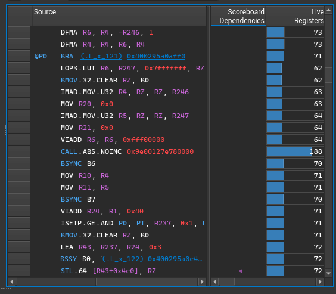

Ocean's 4
Day 3 Report
Energetic PBL

9 sec/step
EPBL: 3d array

4.5 sec/step (2x)
EPBL: No auto arrays

22 msec/step (200x)
EPBL: Function calls


Porting Progress
thickness_diffuse- bit reproducible
lateral_mixing_coeff- benchmark_ALE complete
- Compiler bug: derived type handling
mixedlayer_restrat